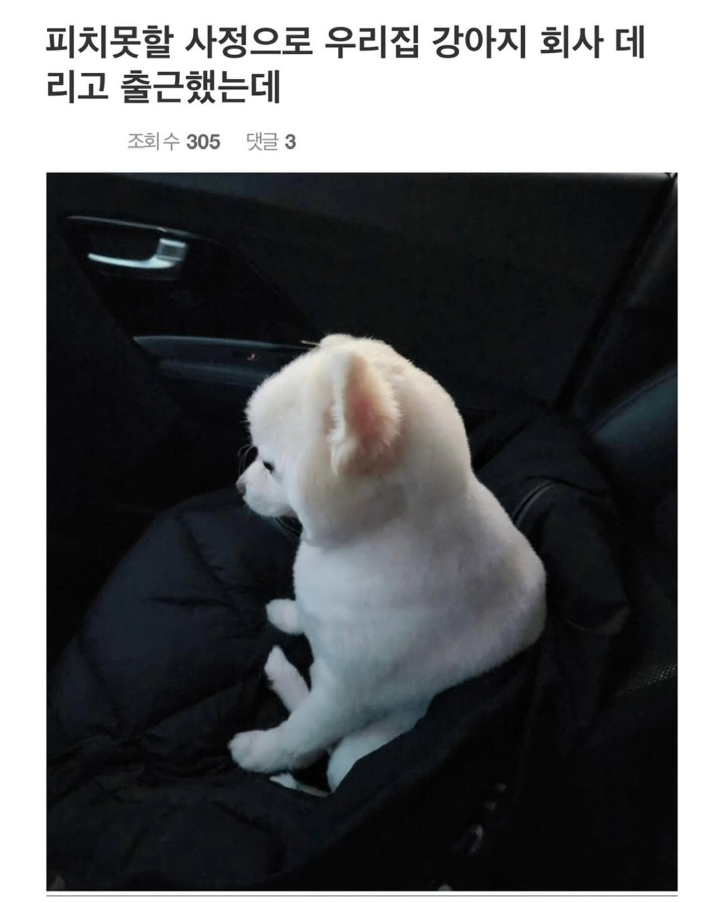
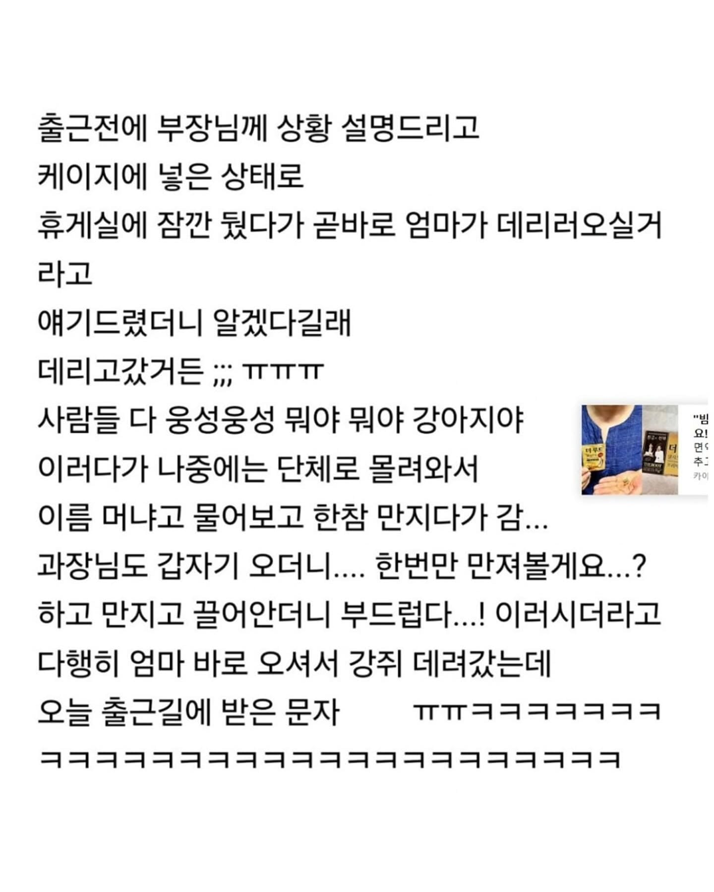
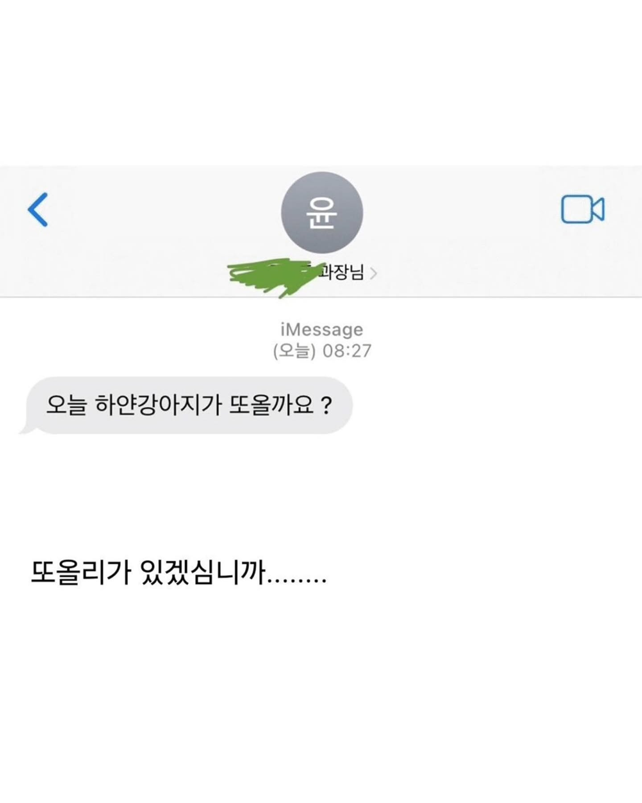
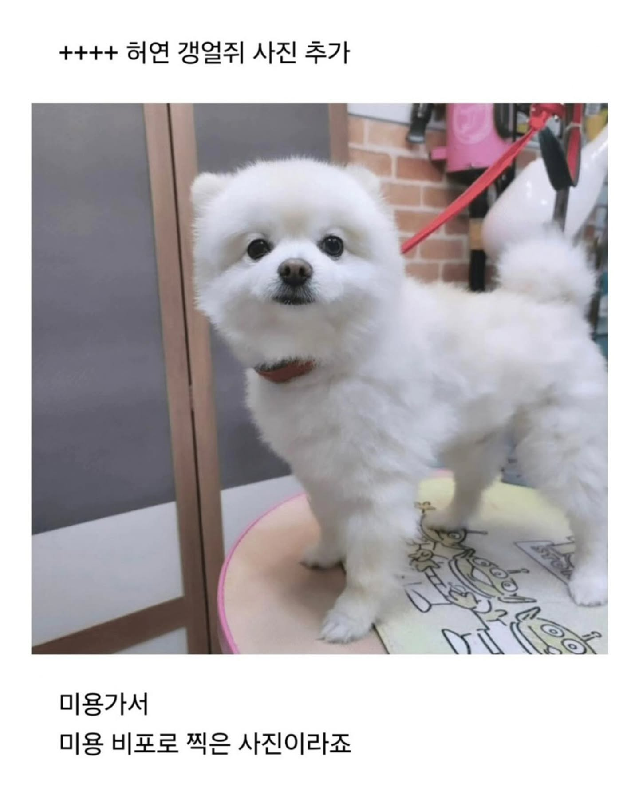
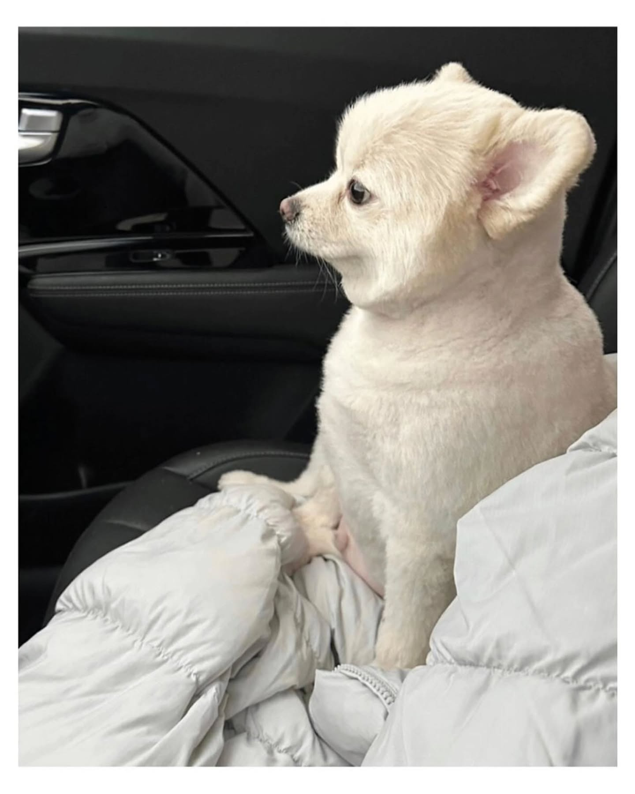
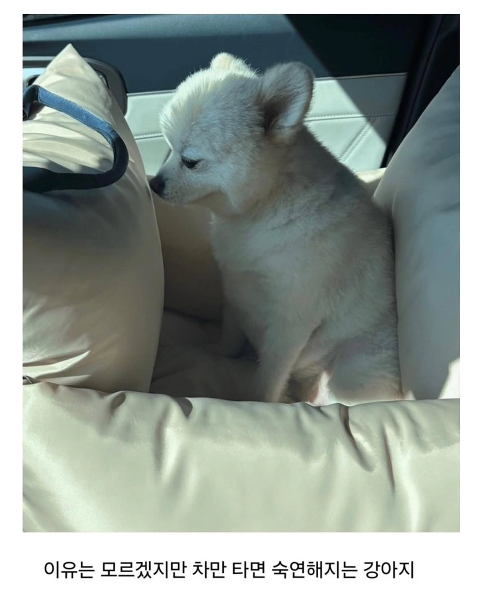

나도 달리면 빨리갈수있는대 어찌 빈찬합을..
'회사는 어떤 곳일까...'
출근 첫날 아빠가 데려다줄 때의 내 모습
멀미하나보네ㅋㅋㅋ
이 차에는 슬픈 전설이 있어
난 전설 따윈 믿지 않아
만약 내일 하얀 강아지가 온다면, 나는 오늘부터 행복해지기 시작할 거야.
불알때러가던길 PTSD 최대로!!!
아 ㅋㅋ
허억 귀여워
사우님은 쉬셔도 되는데 개는 보내세요
약하게 멀미하나보다 ㅋㅋ 우리집 개도 저랬었음. 그래도 엄마랑 다니는걸 너무 좋아해서 무조건 타고는 싶어하고

'그냥 존나 가만히 있어야겠다'
강쥐 : 차만 타면 병원을가...오늘 병원가는 날 인가 ㅠ
갱얼지는 이렇게 생각할 수도 있겠네ㅋㅋㅋㅋㅋㅋㅋ
하 먼저 꼬리쳐놓고...
저 과장님 뭔가 반찬가게에서 잡채찾는 아저씨가 보이네…
ㅋㅋㅋㅋㅋㅋㅋㅋㅋㅋ
과장님 귀여워
하얀갱얼쥐
출근길은 강쥐도 힘들어 ㅠㅠ
멀미 참는거 아닌가
빠르게 지나가는 창 밖 풍경 때문에 멀미한다던데
차만 타면 병원에 갔던 거 아니야? ㅋㅋ
병원가는줄 알고 그러는거같은데 ㅋㅋㅋㅋㅋ
과장님 강아지덕에 힐링됐나보다 ㅋㅋ
아련한 그의 문자 ㅋㅋㅋ
우리집 개도 차타면 멀미 엄청하는지 얌전해짐
아직 간식을 다 주지 못했는데...!!

포메는 왜캐 정이안가지...
너무 까불거려
ㅋㅋㅋㅋㅋㅋ표정 왜케 귀엽냐
과장님과 만남 주선

막짤 페페 아니냐 시무룩
나는 이제 어떻게 되는 걸까..
'내가 차를 타는 호사를 누려도 될까.....'